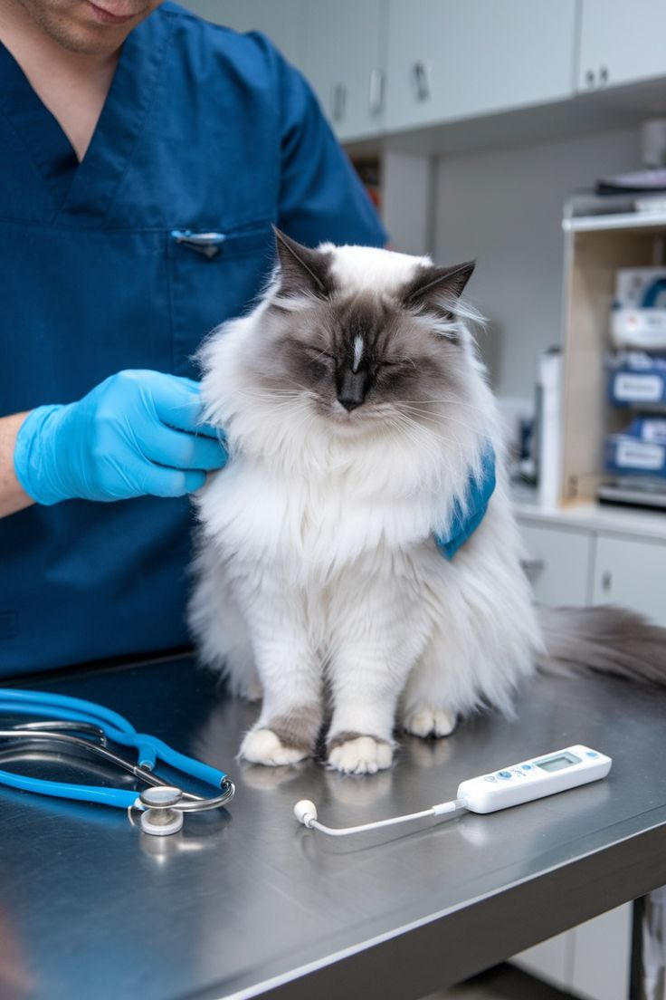
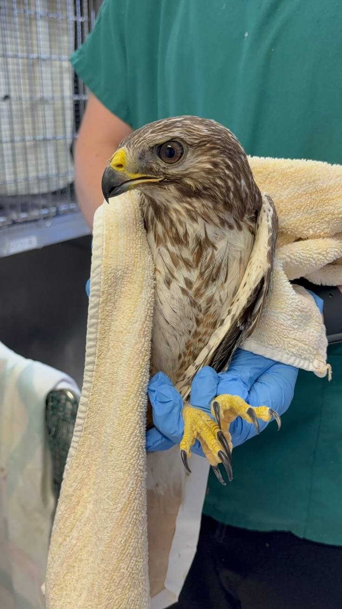
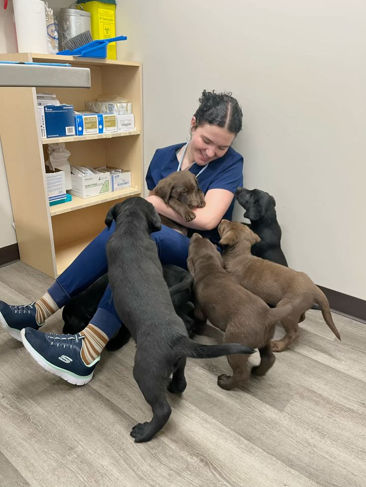
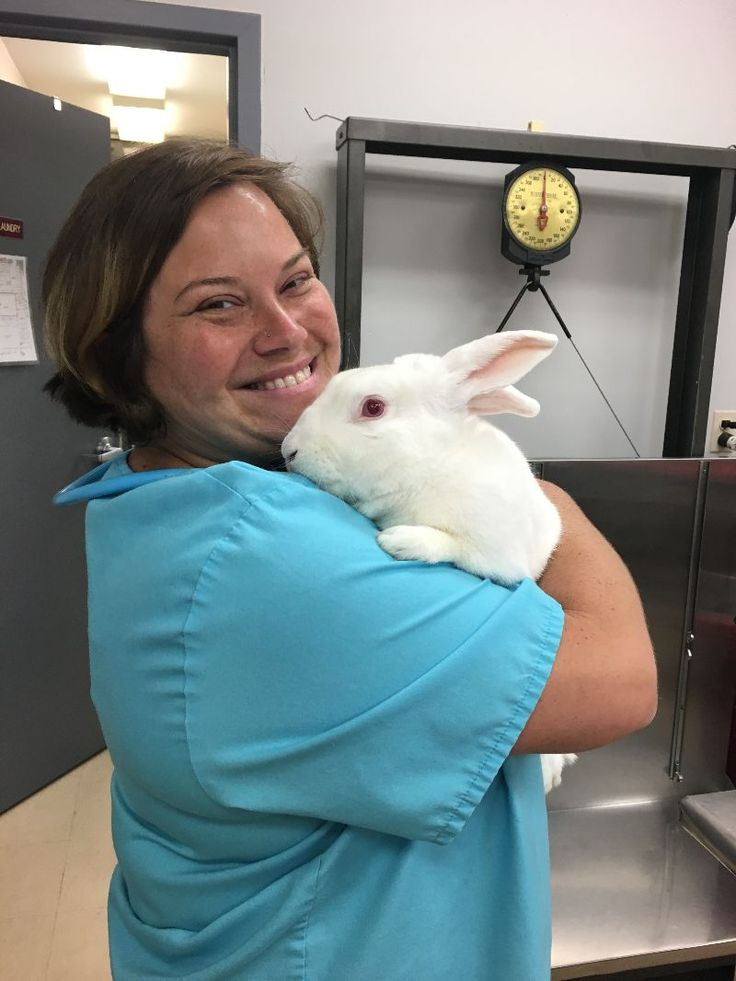
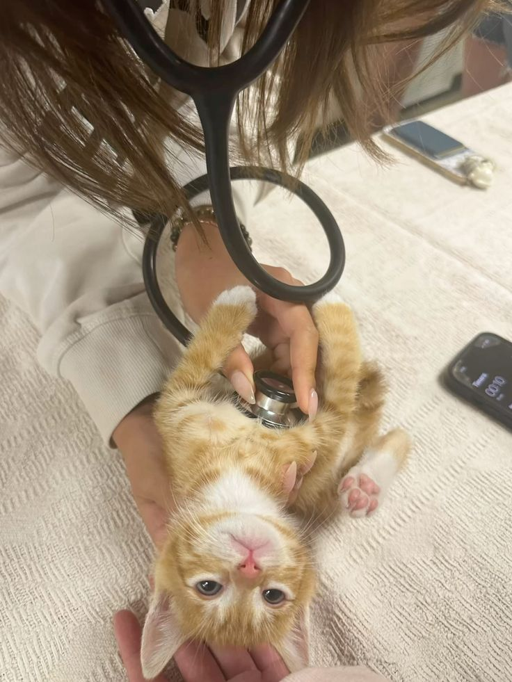

Терапевтический осмотр
Консультация и план заботы о здоровье питомца.
01Клиника с заботой о каждом
Здоровье питомца — наша общая забота
Ветеринарная клиника для кошек, собак, змей, попугаев и кроликов.

забота начинается с вниманияЧем мы поможем
От первого осмотра до сложного лечения — бережно, понятно и с любовью.
Консультация и план заботы о здоровье питомца.
01Профилактика, защита и важная отметка для безопасности.
02Профилактика и лечение зубов и полости рта.
03Операции с вниманием к каждому этапу восстановления.
04Точная диагностика, чтобы действовать уверенно.
05Быстрые исследования в собственной лаборатории.
06Уход за шерстью и коготками без лишнего стресса.
07Наблюдение и поддержка, когда они особенно нужны.
08Помогаем разобраться с кожей, шерстью и зудом.
09Принимаем змей, попугаев, кроликов и других экзотов.
10
Профилактика — это тоже любовь. Приходите знакомиться, даже если всё хорошо.
Выбрать время →Бережно. Профессионально. По-домашнему.
Мы объединяем современную ветеринарию с простым человеческим теплом. Для нас важно, чтобы спокойно было и питомцу, и его человеку.
Наши врачи — выпускники ведущих ветеринарных вузов с опытом работы от 5 лет. Они регулярно повышают квалификацию, изучают новые методы и работают по современным протоколам. У каждого врача есть своя специализация — от терапии до экзотических животных.
В клинике есть цифровой рентген, УЗИ экспертного класса, собственная лаборатория, наркозно-дыхательная аппаратура и операционный блок. Это помогает поставить точный диагноз за один визит и проводить операции разной сложности.
Для пациентов, которым нужен круглосуточный контроль, предусмотрены отдельные боксы и мониторинг состояния. Питомец остается под присмотром команды столько, сколько необходимо.
Клиника открыта каждый день, включая праздники. Принимаем плановые визиты и экстренные случаи — если питомцу плохо, мы не оставим вас ждать до понедельника.
Кошки и собаки — не единственные наши пациенты. Мы лечим змей, попугаев, кроликов и других экзотов: для них предусмотрены отдельные условия и врачи с опытом работы с такими видами.
Каждый питомец уникален, поэтому мы не работаем по шаблону. Подбираем лечение с учетом возраста, породы, состояния здоровья и особенностей характера животного.


Забота — это не только лечение. Это еще и безопасная среда, терпение и внимание к мелочам.
Знакомьтесь, мы
Внимательные врачи, которым можно доверить самое дорогое.
Главный врач · терапевт
Помогает найти общий язык даже с самыми тревожными пациентами.
Хирург · стоматолог
Проводит диагностику и операции с вниманием к деталям.
Врач по экзотическим животным
Знает, как сделать визит комфортным для пернатых и пушистых.
Диагност · врач УЗИ
Объясняет результаты исследований простыми словами.
Будем рады знакомству
Оставьте заявку — мы свяжемся с вами и подберем удобное время.

Принимаем необычных друзей